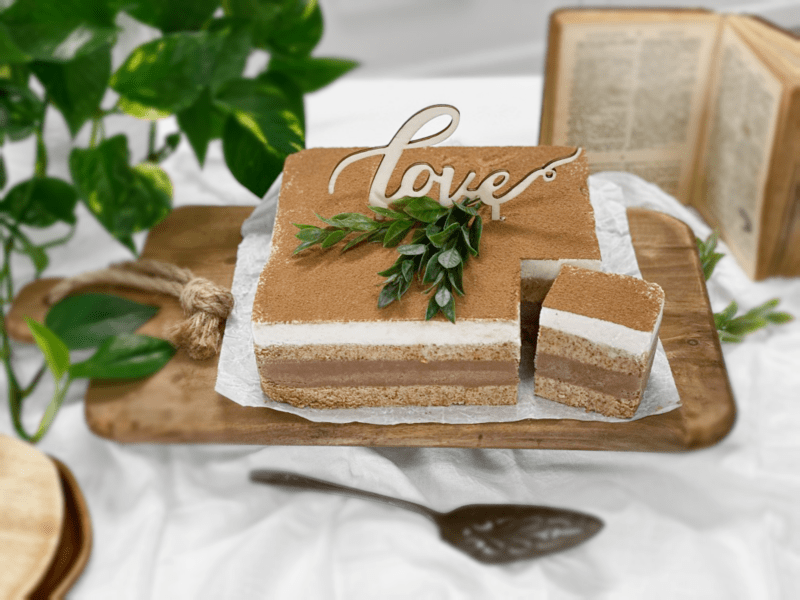
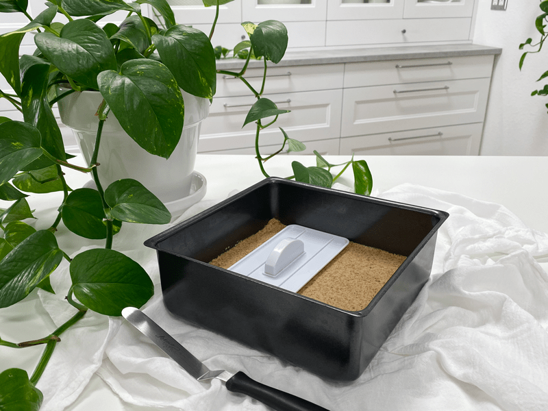
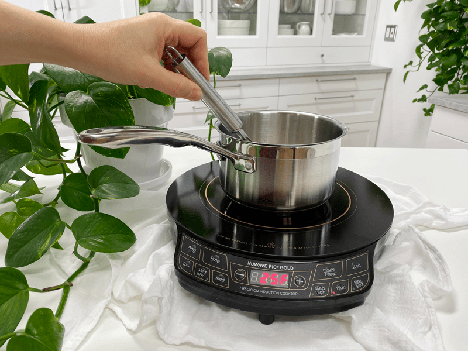
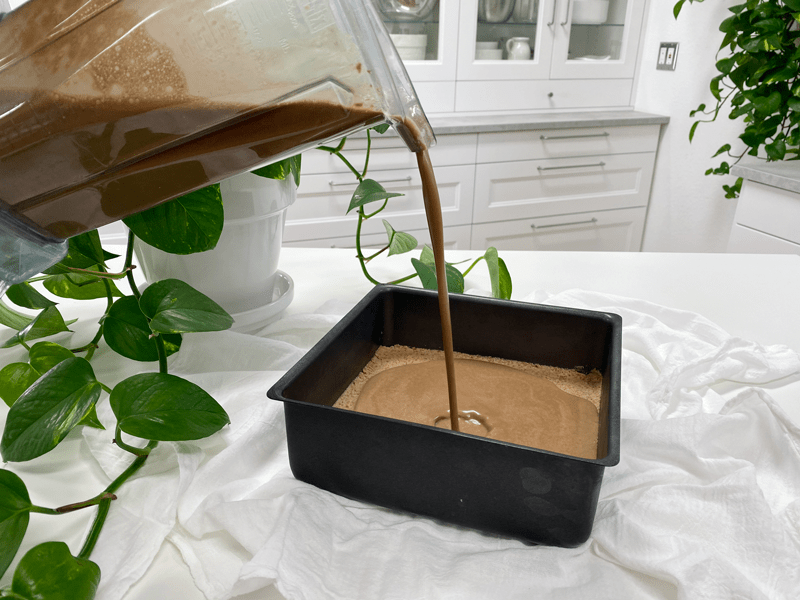
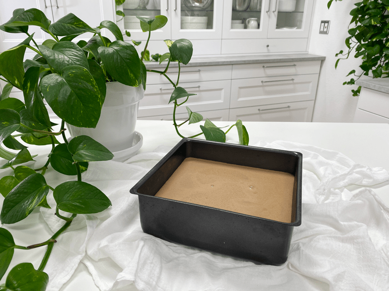
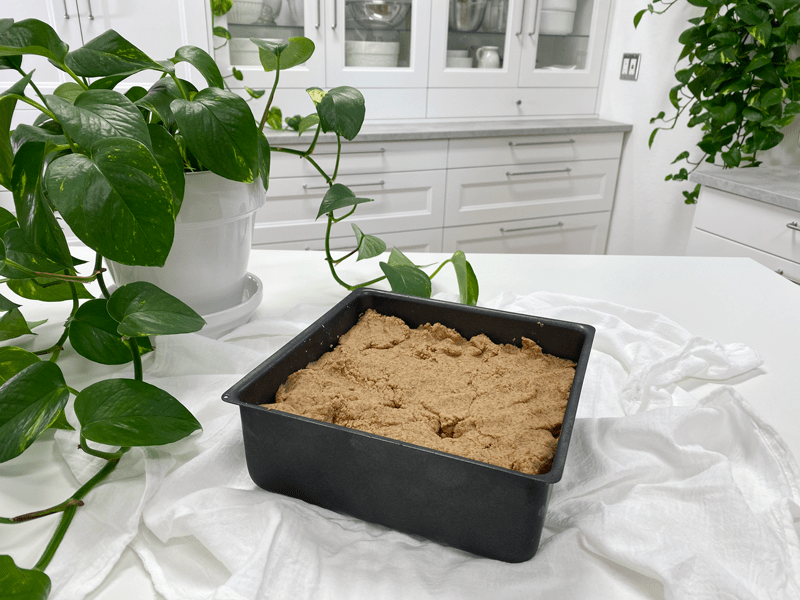
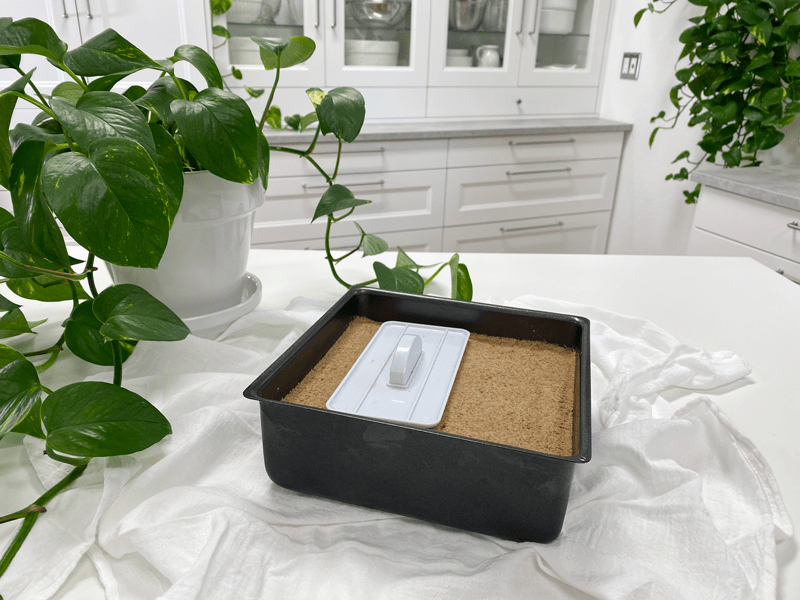
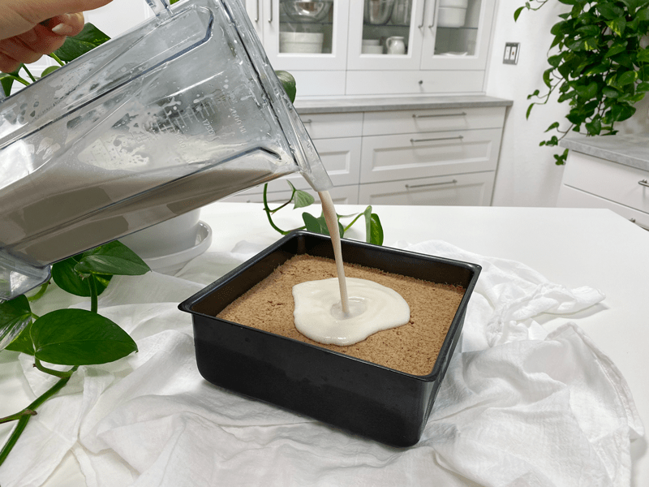
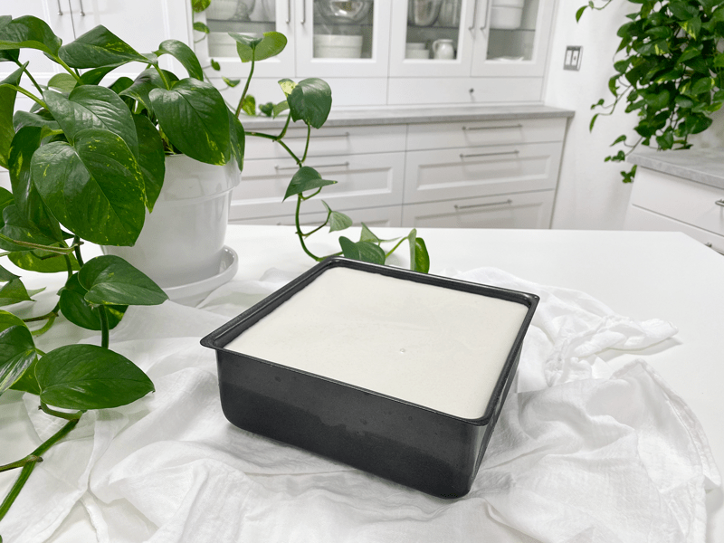

Tiramisu – using Agar Agar
raw / vegan / gluten-free / grain-free
Traditional tiramisu is a coffee-flavored Italian dessert. It is made of ladyfingers dipped in coffee, layered with a whipped mixture of eggs, sugar, and mascarpone cheese, flavored with cocoa. This is a wonderful recipe, not only will it cause your eyes to roll back into your head out of pure delight… but also it teaches you many interesting raw techniques.

By the time you make this dessert, you will be well-educated on making nut milk, almond pulp, coconut cream, date paste, and how to work with agar. These techniques will come in handy as you dive further into the raw food culinary world!
The best advice I can give is to first read through the recipe and instructions carefully before you start. (read why HERE). This will help you be better prepared. Also, make the components, such as almond milk and date paste, etc., before you start to assemble the cake. This is referred to as Mise en Place, which you can learn more about HERE. Clicks on the links in each paragraph for instructions on how to make each component.
To get nut pulp you have to make nut milk. You won’t be using the nut milk in the recipe, just the pulp. Place the nut milk in a mason jar and store it in the fridge. This is wonderful for breakfast to add to your cereals, smoothies or just to drink! Set the nut pulp aside.
This is another great staple to have on hand, so don’t worry about making the exact measurement that is required for the recipe. Make extra! Add a dollop on top of your yogurt, add to a smoothie, dip your finger in it, spread it on raw bread, and so much more!
This is another luxurious food using Young Thai Coconuts. Please read the post I did about The Inside Scoop of Young Thai Coconuts. I always love having extra on hand. Keep it creamy or add a bit more water and drink it straight. Heaven! If you don’t have the resources to obtain fresh Young Thai coconut, you can use canned full-fat coconut milk.
You can use cold-pressed coffee or espresso coffee. Either one will work fine. I love to make a large jar of the cold-pressed version and keep it in the fridge. You can find the recipe HERE. It is more like a concentrate, and you can customize every mug that you drink. For this recipe, I used straight concentrate.
This is not a raw ingredient. If you wish to use a raw ingredient instead try the recipe using Irish moss which can be found here. Agar created from seaweed and is known to have many wonderful health benefits. The key thing to remember when it is that a little bit goes a long way. Agar gels once cooled but can be reheated to melt it again. You need to work quickly when using it because it gels quite rapidly, but it can be a lot of fun to experiment with. To learn a bit more about agar, click (here).
 Ingredients:
Ingredients:
Yields an 8×8 pan
Cake Ingredients:
Chocolate Mousse Layer:
- 2 cups (440 g) thick coconut cream or canned
- 1 cup (222 g) cold espresso coffee
- 1/2 cup (150 g) maple syrup
- 1 tsp (5 g) vanilla extract
- 1/4 tsp (2 g) Himalayan pink salt
- 1/4 cup (25 g) raw cacao powder
- 1/2 cup (105 g) raw coconut oil, warmed to liquid
- 1 1/2 Tbsp lecithin powder (optional)
- 1 Tbsp (7 g) agar powder
Vanilla Mousse Layer:
- 2 cups thick coconut cream or canned
- 1/2 cup (150 g) maple syrup
- 1/4 cup water
- 1 Tbsp (15 g) vanilla extract
- 1/4 tsp (2 g) Himalayan pink salt
- 1/2 cup raw coconut oil, warmed to liquid
- 1 1/2 Tbsp lecithin powder (optional)
- 1 tsp (2 g) agar powder
Topping:
- A dusting of cacao powder
- 1 Green and Blacks Espresso Chocolate Bar, shaved into curls (optional)
Preparation:
To Make the Cake:
- Place the date paste, espresso, coconut oil, vanilla, and salt in a food processor and process till creamy.
- Slowly add the almond pulp and process for several minutes, until it becomes light and fluffy. Stop and scrape the sides down if needed.
- Divide and spread batter in half (roughly 2 cups / 600 g) of the cake batter evenly on the bottom of an 8 x 8-inch square springform pan.
- Chill while making the chocolate mousse. Cover and refrigerate the remainder of the cake batter until ready to use.
To Make the Chocolate Mousse:
- First off, let’s bloom the agar. Whisk together the agar powder and 1/2 cup (115 g) water in the pan. Let it sit while you combine the rest of the filling batter in the blender.
- In the blender combine the coconut cream, espresso coffee, maple syrup, coconut oil, vanilla, salt, and cacao powder. Blend until smooth.
- Now bring the agar and water to a slight boil, whisk constantly until the agar is dissolved.
- With the blender running, add the agar slurry and lecithin (if using) and blend until incorporated.
- It will have a thick liquid consistency. If the agar is jello stiff like, return to heat and warm to soften. Blend until everything is well mixed.
- Pour a layer of the chocolate mousse evenly over the top of the cake (roughly 3/5″ ) and chill for approximately 1-2 hours, or until firm.
- I had too much of the chocolate filling for my pan so I poured the extra into some small single-serving containers.
- Carefully spread the remainder of the cake mixture over the top of the firm chocolate mousse. Chill while making the vanilla mousse.
To Make the Vanilla Mousse:
- As above, bloom the agar by whisking together the agar powder and 1/2 cup (115 g) water in the pan. Let it sit while you combine the rest of the filling batter in the blender.
- Place the coconut cream, maple syrup, water, coconut oil, vanilla, and salt in the blender, and blend to a smooth cream.
- Now bring the agar and water to a slight boil, whisk constantly until the agar is dissolved.
- With the blender running, add the agar slurry and lecithin (if using) and blend until incorporated.
- It will have a thick liquid consistency. If the agar is jello stiff like, return to heat and warm to soften. Blend until everything is well mixed.
- Pour the vanilla mousse evenly over the top of the cake and chill for approx. 4 hours, or until firm.
- Dust with raw cacao powder and decorate with chocolate curls.
- If you must freeze the cake and allow it to thaw for 1-2 hours before serving and plan on enjoying the whole cake. Agar doesn’t hold it’s structure all that well after it has been frozen.
-

-
Press the first cake layer evenly into the pan.
-

-
Prepare the agar slurry for the chocolate layer. You will also be doing this for the vanilla layer.
-

-
Pour the chocolate mousse layer over the cake.
-

-
Set in the fridge or freezer to set up.
-

-
Make sure that chocolate mousse layer is firm before adding the second cake layer.
-

-
Press the second cake layer into the pan.
-

-
Prepare and add the second agar slurry to the vanilla mousse and pour over the cake.
-

-
Place in the fridge or freezer to set.
© AmieSue.com